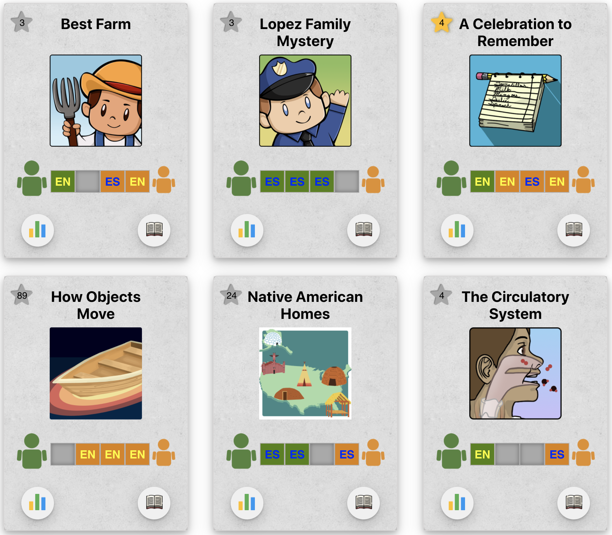
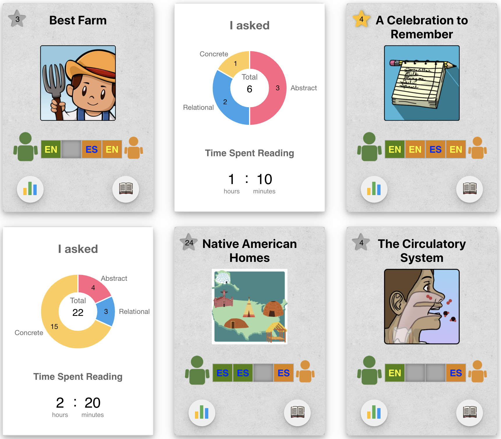

<template id="project-embrace-template">
  <article>
    <header>
      <h1>EMBRACE</h1>
      
    </header>

    <section class="project-section" aria-labelledby="background-heading">
      <h2 id="background-heading">What is EMBRACE?</h2>
      <p>
        It's an intelligent language learning intervention that aims to foster children's linguistic proficiency 
        and deep reading comprehension through parent-child dialogic reading. Through adaptive notification and 
        dialogic engagement tracking, the app prompts Parent users to engage in multidimensional questioning&ndash;spanning 
        abstract, concrete and relational concepts&ndash;while reading. Leveraging embodied cognition, 
        the platform's interactive inquiry aims to drive Child user's deeper cognitive processing and 
        long-term comprehension. 
      </p>

      <p>
        My primary stakeholders were research faculty from University of Pittsburgh and Arizona State University. 
        I was tasked with designing and implementing a Parent Dashboard for EMBRACE based on defined specifications.
      </p>
    </section>

    <section class="project-section" aria-labelledby="goal-heading">
      <h2 id="goal-heading">What is the goal of the project?</h2>
      <p>
        We wanted to provide Parent users with a personal informatics dashboard that summarizes their reading behaviors 
        and question-asking patterns. The goal was to nudge them to ask conversation-inducing questions based on various 
        themes, aimed to encourage the child to engage in different levels of thinking. To this end, the dashboard was 
        required to display per book how many questions Parent user asked for each question type (Concrete, Abstract, 
        Relational) along with their total sum, number of readings done by each user (Parent and Child), time spent 
        reading, and their progress toward meeting the app's minimum requirements. 
      </p>

      <p>
        Throughtout ideation, I remained mindful that our target demographic includes non-technical users with varying 
        educational backgrounds. Given our users' demographic, my design goal was to make the information on the dashboard 
        immediately intelligible to, ultimately, universal users regardless of their educational or technical background. 
        So I took out my HB graphite pencil and started scribbling my ideas onto pieces of paper.
      </p>

      <p>
        There was quite a bit of numeric data we wanted to convey, and I thought it essential to not just display them, 
        but to present them intuitively. In my initial design, I focused on the presentation of the data. My first 
        instinct for organizing the numbers was to use graphs. Rather than just showing numbers, this would help users 
        instantly recognize relative differences between the numeric values. For example, the visual differences in lengths, 
        angles, or slope of the graph could help them easily notice their tendency to ask Concrete questions more frequently 
        than Abstract or Relational questions. 
      </p>

      <p>
        Next I asked myself, which graph is appropriate? I researched different graphs and ruled out many types of graphs, 
        such as a line graph, as my purpose was to help users compare quantities rather than track trends. Given a small, fixed 
        set of categories, I eventually narrowed down my options to a pie chart and bar graph. I used a donut chart for the 
        total questions asked overall and per category because it allows me to display the overall total in the central hole. 
        And to make comparison effortless, I included the numeric values on the arcs to clearly communicate the quantity. 
        For the reading volume per user by language, I used a different graph (namely, a bar graph) to distinguish the data.
      </p>

      <p>
        As a way to nudge users toward diverse questioning across different themes, I added a Feedback button that opens up 
        a dialog conveying actionable insights.
      </p>

      <div class="image-container">
        
      </div>

      <h3>Areas for improvement and iteration 1</h3>
      <p>
        This initial layout, however, lacked scalability for large volumes of books. If there are more than ten books in the 
        app, it would require excessive scrolling. So to address this, I added a navigation panel at the bottom of the layout, 
        showing buttons that correspond to each of the books in the app. And to help users monitor aggregate progress and 
        achievement across all the readings, I added a default display which shows the cumulative statistics.
      </p>

      <div class="image-container">
        
      </div>

      <h3>Areas for improvement and iteration 2</h3>
      <p>
        When I presented it to the lab group, my research advisor suggested a side-by-side comparison to facilitate quick 
        analysis. This was a challenging yet exciting problem. With the objective mind, I thought about how to utilize the 
        screen real estate to display the comparison view. To achieve this, I thought of using a stacked bar chart, as the 
        stacks and bar height when viewed side-by-side can convey similarities and contrasts across data at a glance. 
        Additionally, I included a modal that opens up on clicking the bars, showing a breakdown of the data at the chapter 
        level.
      </p>

      <div class="image-container">
        
      </div>

      <h3>Areas for improvement and iteration 3</h3>
      <p>
        For this round of iteration, I received feedback from the lab members that having too many charts together causes 
        visual overwhelm. Moreover, showing chapter-level insights wasn't required, so I did not include them in the 
        succeeding iterations. Now addressing the former feedback, however, was a challenge because for quick comparison 
        across the books, showing the data next to each other was necessary. I drafted an idea that displays one specific 
        category, with the ability to toggle additional metrics to declutter the dashboard. While this design did not provide 
        a side-by-side comparison view, it served as an inspiration for my next iteration.
      </p>

      <div class="image-container">
        
      </div>

      <p>
        Before moving onto the next iteration, I also drew out ideas for communicating and visualizing the requirement 
        fulfillment. For the initial design, I used a horizontal stacked bar chart, extending on both sides of a column of 
        book names, for a compact layout. This way, Parent users can view their progress and compare the data in multiple 
        dimensions&ndash;between their and Child's data for each book horizontally and between the books for each user 
        vertically. The second design is similar in layout but instead of using a stacked chart, I used a 2 by n grid, with 
        n being the minimum requirement. When the user reads the book, a square is filled in. The empty squares show the 
        reads remaining to target. 
      </p>

      <div class="image-container">
        
      </div>

      <p>
        Next I moved on to combining the above ideas into one layout. I built upon the ideas in the process and came up 
        with a card layout. This was inspired from the idea of toggling different views. This layout was quite effective 
        because it hides numeric data on the back side of the card until the user selects to view it. Moreover, the user 
        can flip the cards and compare the quantitative summary across the books. On the front side, I dedicated a section 
        below the book image to the visualization of the requirement fulfillment. I condensed this view further and displayed 
        flags representing the languages the Parent and Child users are recommended to read. The languages were intended 
        to be colored in to indicate fulfillment.  
      </p>

      <div class="image-container">
        
      </div>

      <h3>iteration 4</h3>
      <p>
        This latest design was mostly received with approval, but there were still some areas for improvement. One area 
        was related to the flag representation&ndash;I used specific country flags to represent English and Spanish, but 
        this wasn't an inclusive design. There is more than one country whose official language is English or Spanish. So 
        we as a group decided to use initials, namely EN for English and ES for Spanish.
      </p>

      <p>
        In our discussion, we also decided to provide a direct link to the books from the dashboard. I iterated on the 
        previous idea and added two buttons on the front side of the card, one that opens up a dialog before being routed 
        to the book and another for flipping the card to show the quantitative summary. The dialog present the Reader and 
        Language options, along with a data-driven Recommended indicator next to the recommended Reader and Language for 
        the current reading.
      </p>

      <p>
        To make the requirement status more apparent, I further refined the requirement fulfillment view. I added four 
        boxes, with the Parent icon on the left and the Child on the right, and depending on who read in which language, 
        the color and text of the box are set. And this was the MVP design that our research team used to conduct 
        usability testing with representative target users.
      </p>
    </section>

    <section class="project-section" aria-labelledby="usability-testing-heading">
      <h2 id="usability-testing-heading">Usability Testing</h2>
      <p>
        My research team conducted usability testing with 5-6 participants. Unfortunately, I wasn't able to direcly 
        participate in the sessions due to IRB permission reasons. But I created a low-fidelity prototype on PowerPoint 
        and wrote a usability testing script and tasks, along with questions to help us better evaluate the effectiveness
        and usability of the design. From the usability testing, we found that the information and different features of
        the dashboard were easy to understand and navigate. We also received some valuable feedback to enhance the design. 
        One was a suggestion to include the reading level of each book, or to order 
        the book based on the reading level. And another feedback was to show cumulative reading counts for each book.
      </p>

      <div class="image-container">
        
      </div>
    </section>

    <section class="project-section" aria-labelledby="feedback-integration-heading">
      <h2>Feedback integration</h2>
      <p>
        Our team decided to integrate the feedback in our final design. For the feedback about reading levels, we 
        decided to order the books accordingly. And for cumulative reading counts, I integrated it into a star icon, 
        which gets displayed on the top left corner of the card and changes the color from gray to yellow to indicate 
        that the app's minimum requirements have been satisfied. 
      </p>

      <p>
        Finally, with the stakeholders' approval, I moved on to implementing the design using React framework.
      </p>

      <div class="image-container layout-horizontal">
        <div class="layout-vertical">
          
          <figcaption >Fig 1. Implementation in React</figcaption>
        </div>

        <div class="layout-vertical">
          
          <figcaption>Fig 2. Implmentation in React showing graphs</figcaption>
        </div>
      </div>
<!-- 
      <div class="image-container layout-vertical">
        
        <figcaption>Implementation in React</figcaption>
      </div>
      <div class="image-container layout-vertical">
        
        <figcaption>Implmentation in React showing graphs</figcaption>
      </div> -->
    </section>

    <section class="project-section" aria-labelledby="moving-forward-heading">
      <h2 id="moving-forward-heading">Learnings</h2>
      <p>
        Looking back, I realize that some colors on the horizontal status bar that lives on the front side of the card 
        may not have sufficient contrast, and therefore the texts may not be accessible. This is something I should 
        address by ensuring the foreground and background colors adhere to the WCAG AA and AAA guidelines. This has 
        further led me to realize the importance of usability testing with different levels of prototypes. Had I 
        conducted usability testing with a high-fidelity prototype, I would have received feedback on the colors and 
        readability directly from users. 
      </p>
    </section>
    
  </article>
</template>